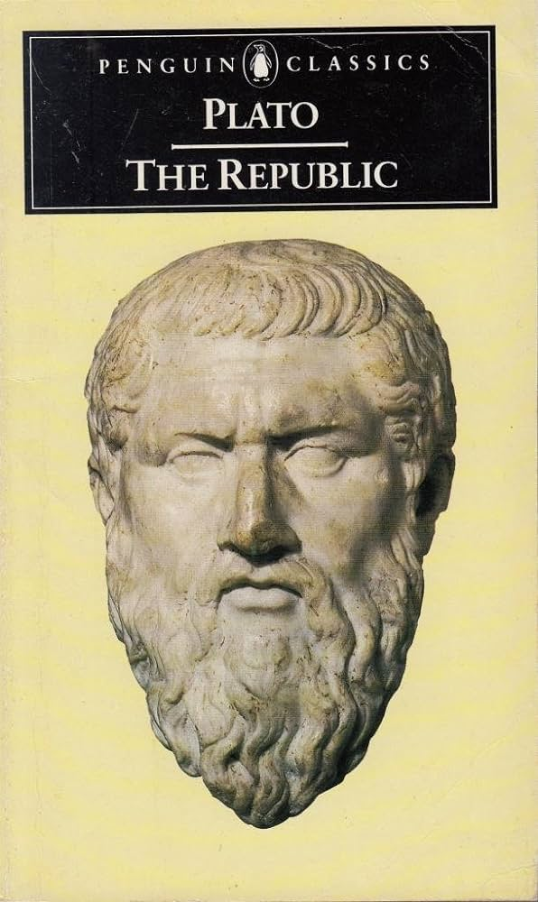

Whether you realize it or not I think everyone has a philosophy. This philosophy can vary through practically any subject, if you think about something a philosophy is usually involved. Have you questioned yourself or asked yourself a question about any topic ? Questioning is what leads to what could be considered your “philosophy” as it is what you think to be the reasoning and ideology behind everything you do. What is wrong and what is right ? Philosophy as a word and practice originates from Greece in the 6th Century BC, where philosophers would study the basis of what anything in the grand scheme of things meant, what the reasonings to the world's questions would be. People with experience and thought were considered very knowledgeable and would come up with their own philosophies on certain things, in a way this is almost like a very thought out opinion. Certain philosophers were known for their specific ideologies most of the time. With all this study of a deeper thinking to the questions in life many of these ideologies became very popular, some even lasting until today’s modern age where it has almost formed what we know as the world today. A few of the famous Greek philosophers I am also a big fan of include Plato, Epicurus, and Socrates.
Plato

Starting out with this new endeavor of philosophy I picked up a book about the Greek philosopher Plato called “Plato’s “Symposium”” and I only dove deeper reading an actual book by him called “The Republic.” Reading “The Republic” was a lot different than the first book due to the style of writing, it is written as a dialogue between two people who somewhat clash their ideologies together, but come to an all around philosophical conclusion in the end. I think this style of writing is very engaging, however this book is on the more controversial side. Not for its writing though, but rather due to Plato’s challenging ideas of how society is how we as a people live in it. In my opinion the very action of challenging ideas is philosophical in itself, that is kind of the whole point. I find it hard to agree with a lot of the things Plato says myself, and even Plato himself criticizes his ideology. This is what I think makes the essence of a Philosopher, to be able to challenge all these ideas, and this leads to inevitable controversy. There were two big moving factors for the ideas brought about in “The Republic.” The Peloponnesian war had taken place during his time where he was able to witness the effects of war and even had personal losses in this war. During his time, he also witnessed the execution of one of the great philosophers, Socrates that had come about also due to the effects of the war. Plato’s relationship with Socrates is very well known in history as being the student and the teacher, respectively. He ended up taking Socrates as his main character for the dialogue in “The Republic” and this fascinates me because Socrates was known for never writing down his ideas and studies. The sad part is we’ll never know to what extent the ideology written in the dialogue was accurate to Socrates ideology. Socrates’ ideology was known for being about wanting to know the absolute truth to something before making an idea of it, no relative solutions. He was commonly known to always challenge other people’s ideas by asking the question of “What is it?” as to try and have them give the definition of what something truly is. I have also formed this ideology in a way, to where if something is not truly/fully known how can we be so sure of what it is, and how can we fully understand it. Going back to my definition of philosophy, the action of questioning again is what really brings about ideology, the ability to challenge ideas, to have philosophy. “The Republic” in fact starts with such questioning, specifically Socrates favorite line of questioning, “What is it?”